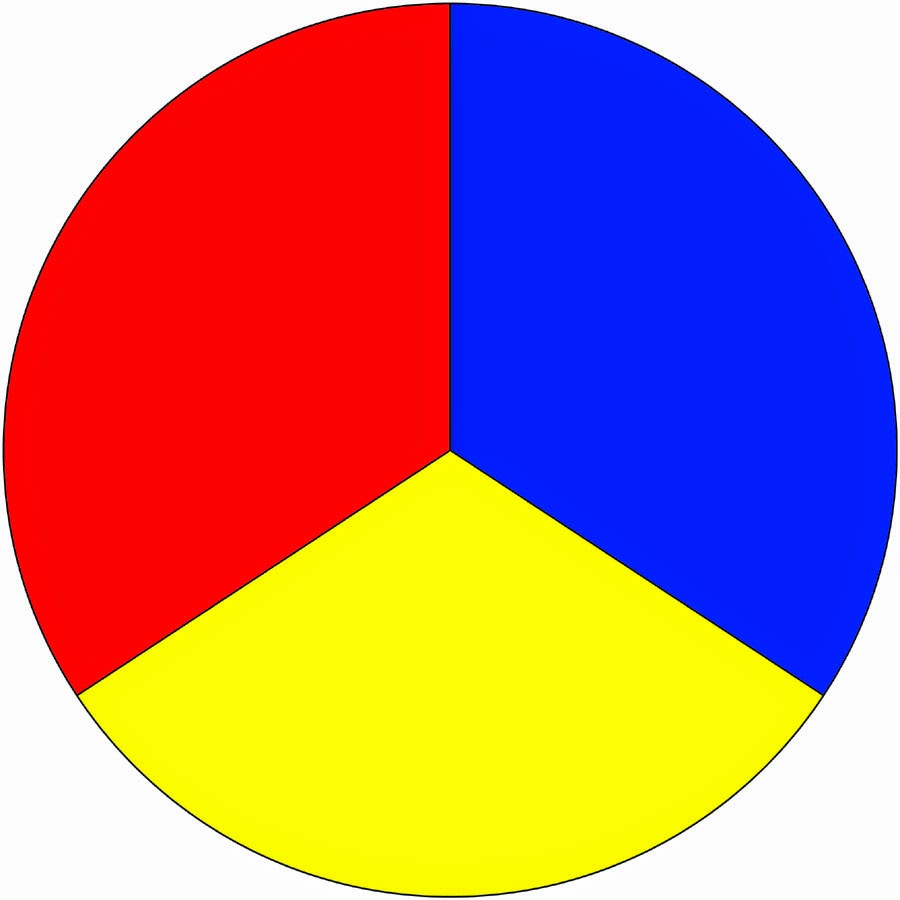
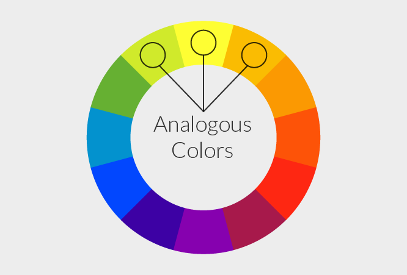

As you'll be using color often, you may want to familiarize yourself with color terms and different palettes that are pleasing to the eye. You should be familiar with the following:
Color palette - in the digital world, refers to the full range of colors that can be displayed on a device screen or other interface.
Primary Color - any of a group of colors from which all other colors can be obtained by mixing.

Secondary Color - a color resulting from the mixing of two primary colors.

Accent Color - are colors that are used for emphasis in a color scheme.
Complementary Colors - colors directly opposite each other in the color spectrum, such as red and green or blue and orange, that when combined in the right proportions, produce white light.

Analogous Colors - groups of three colors that are next to each other on the color wheel, sharing a common color, with one being the dominant color, which tends to be a primary or secondary color, and a tertiary. Ex. Red, orange, and red-orange.

If you're not sure how to start organizing your color palette, try using Adobe Color Picker or Paletton!